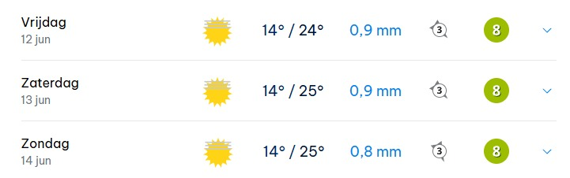

Teamweekend 2026
Beleef het weekend van je leven!
Nog even geduld...
Laatst bijgewerkt: 29-05-2026
De Teamweekend nummers 🎵
Er staat een verassing op jullie te wachten, zorg ervoor dat je deze nummers voor het weekend kapot streamt!
🚨 Rubriek #4: Kinderfoto's, Tropische Temperaturen en een Exclusief Clubje!
Mannen, de op één na laatste update staat live en het weekend is nu echt dichtbij dat we het bier bijna kunnen proeven. Over precies één week vliegen de persoonlijke pagina’s eruit en eind volgende week pakken we de tassen in. De organisatie is vol aan het genieten van de speculaties. Veel lees plezier weer!
💻 Laatste website updates: Kinderfoto's en een buitenlandse breinbreker?
De website zit deze week weer vol met nieuwe updates. De meest spraakmakende update? De organisatie-pagina. We hebben een paar pareltjes van kinderfoto’s uit de stoffige boeken gehaald, zodat jullie de jongere versies van de nog onbekende organisatoren kunnen aanschouwen. Dit is tevens de laatste organisatie hint. Daarnaast is er een veelzeggende hint over de locatie gedropt in de lokale taal van de bestemming. Als laatste van de updates is er weer een nieuwe dag van het programma vrijgegeven én staat de breinbreker eindelijk live. Kortom, genoeg te doen in de een na laatste week!
🤫 Vanuit de wandelgangen...
Het spionagenetwerk van het team draait overuren. Er gaat een gerucht dat een aantal het logo van de locatie-hint heeft weten te achterhalen. Maar nu is de vraag hoeveel zeggend was dat logo nu? Jullie krijgen alleen nog deze week de tijd om via onderstaand formulier te stemmen op wie er volgens jou in de organisatie zitten. Degene die de hele lijst honderd procent goed heeft, staat iets moois te wachten. Daarnaast hebben we al een aantal angstaanjagend goede speculaties voorbij horen komen, maar gelukkig nog véél meer foute! Blijven we in Nederland? Of Duitsland? Of toch België? Of toch heel ergens anders?
Wie zit er, naast Lars, in de organisatie? 📝
Vul je naam, je unieke verificatiecode en de 4 namen in waarvan jij denkt dat die naast Lars in de organisatie zitten.
🏡 De Locatie & Het Weerbericht: Pak die zonnebrand maar in!
Het zoekgebied wordt kleiner en kleiner, en de hints worden steeds duidelijker. Volgende week maken we een einde aan al het gespeculeer en geven we jullie het precieze adres van onze accommodatie. Wat we wel alvast kunnen verklappen, is dat we heerlijk centraal zitten met een waslijst aan activiteiten in en rondom de accommodatie. Het gaat om een groot verblijf met een gigantisch stuk grond en meerdere panden waar we het hele weekend gebruik van mogen maken. En wat is voor nu het allerbeste nieuws? We zijn nu zo dichtbij dat we de weersvoorspellingen in kunnen zien. En mannen, dat ziet er positief uit! Op de vrijdag van aankomst tikken we de 24 graden met een volle zon aan, en de rest van het weekend blijft het minimaal even warm of stijgt de temperatuur zelfs nog verder. Laat die dikke truien dus maar thuis en zorg voor genoeg korte broeken.

👀 Spelers in de kijker
Deze week pakken we de schijnwerpers erbij voor een exclusief clubje van slechts drie spelers. Volgende week, tijdens de allerlaatste update, is het de beurt aan de laatste vier spelers!
-
Sten (De Messi van het Middenveld): Onze eigen dribbelkoning. Hij haalt de bal moeiteloos op bij de verdediging om vervolgens als een gladde paling door de vijandelijke linies heen te slingeren en met heerlijke passes te strooien. Al moeten we zijn corners natuurlijk niet vergeten... die vliegen soms op bijzondere wijze mijlenver over iedereen heen. Wat we vooral in hem waarderen, is zijn positiviteit. Hij weet elke negatieve vibe binnen no-time om te buigen in iets gezelligs.
Verwachting: Dat jij met je positiviteit zorgt voor een hoop gelach en sfeer tijdens dit weekend. -
Ryan (De Roomblanke Drogba): Onze nummer 9, het absolute eindstation. Als het draait om doelpunten (of het voorbereiden ervan), kijken we allemaal naar hem. Zal hij dit jaar de titel van topscorer pakken of is dit toch zijn gymrat concurrent? In het veld vertoont hij soms wat tegenstander-ontwijkend gedrag, maar als het erop aankomt gaat hij het duel aan en beschermt hij de bal als een baas. Een spits die bovendien veel sneller scoort door simpelweg op de goede plek te staan, dan met zijn hoofd.
Verwachting: Dat jij bij werkelijk élke activiteit de overwinning voor je team over de streep trekt door op het beslissende moment de belangrijkste zet te doen. -
Wout (De Captain): De absolute leider van dit team, zowel binnen als buiten de lijnen en in de kleedkamer. Hij heeft een succesvolle promotie ondergaan van de achterhoede naar het middenveld, waar hij het uitermate goed doet en de hele boel blijft aansturen. Ondanks die gigantische lange stelten van hem, is hij ijzersterk aan de bal, en als de tegenstander denkt erlangs te zijn, schuift hij die benen uit en pakt hij de bal alsnog af.
Verwachting: Dat je je aanvoerdersband mentaal omhoudt en de hele boel strak aanstuurt tijdens de activiteiten waar dat nodig is.
Tot volgende week voor de allerlaatste update. Of zal er in de tussentijd toch een kleine update komen?
🚨 Rubriek #3: Hackpogingen, het Laatste Slotje, Complimenten en de Vedette stopt?!
Mannen, we gaan als een speer. De derde rubriek staat alweer live en we komen nu écht dichtbij: over twee weken is het alweer zover! De groepsapp ontploft zowat van de spanning, nee geintje. Iedereen aast op de allerlaatste hints om de locatie te achterhalen en de organisatie te ontmaskeren. En ja, we weten dat jullie zitten te loeren naar die laatste vergrendelde pagina's op de site...
💻 Laatste website updates: Het programma en het laatste slotje
We hebben weer met munitie geschoten op de website. Ten eerste staat er een gloednieuwe locatie-hint online die de bestemming wel een flink stuk duidelijker kan maken voor de goede onderzoeker. Ook zijn er weer nieuwe hints gedropt over de nog onbekende organisatoren. Maar er is meer: de (globale) planning voor de vrijdag is vrijgegeven! De details hebben we natuurlijk weggelaten om de verrassing zo groot mogelijk te houden. En voor wie zich afvroeg wat die laatste pagina gaat worden: kijk maar eens goed naar het menu.
🤫 Vanuit de wandelgangen...
De spionage-afdeling heeft weer flink wat opgevangen langs de lijn. De armen van Marijn (opnieuw), Ryan, Jesper (als ervaringsdeskundige), Jim en Tim werden deze week in de mix gegooid als mogelijke organisatoren naast Lars. De één kwam met betere argumenten dan de ander, maar wie o wie zit er nou echt achter? We hebben ook gehoord dat dit het laatste seizoen zal zijn van onze vedette John. Maar de vraag is of het nog een gerucht is, of dat hij het verlengen van zijn contract daadwerkelijk heeft afgewezen. Wat gaat het zijn? Halen we hem nog over om te blijven of is het al verloren zaak en moeten we zonder hem verder…. 😞. En dan nog even dit: we hebben gehoord dat een aantal IT-nerds uit het team hebben geprobeerd de website te hacken om zo de locatie vroegtijdig te achterhalen. Jongens, denken jullie nou echt dat jullie ons te slim af zijn? Weten jullie het inmiddels écht, of zitten jullie er gigantisch naast? De tijd zal het leren...
🔐 Het mysterie van de Persoonlijke Pagina
Laten we vast een boekje opendoen over die persoonlijke pagina’s. Elke speler krijgt een eigen, unieke pagina die alléén voor hem bestemd is. Aan het begin van de week van het teamweekend sturen we jullie de inloggegevens via een privé-appje toe. Wat we wel al kunnen verklappen is dat deze pagina het weekend onmisbaar gaat zijn. En een waarschuwing is hier op zijn plaats: lees alles wat er staat zéér zorgvuldig. Als je dat niet doet, zijn de risico's en consequenties volledig voor jezelf... Wat er nou precies op staat? Dat houden we nog even strikt geheim. Geen hints, niks. Tot de week van vertrek!
👀 Spelers in de kijker
Deze week zetten we weer zes nieuwe spelers in de schijnwerpers:
-
Marlon (De Egyptenaar): Onze lieve Egyptenaar is absoluut niet vies van een wedstrijdje extra. Hij houdt de Spond-app scherper in de gaten dan zijn eigen bankrekening. Zodra hij ziet dat we te veel wissels hebben, offert hij zich heel empathisch op om bij het 8e mee te doen zodat de rest meer kan spelen. Maar eerlijk is eerlijk, we zijn het gelukkigst als je gewoon bij ons in het veld staat, zodat we kunnen genieten van je snelheid en je (soms wat blinde) ballen naar voren.
Verwachting: Dat je, zoals je vorig jaar plechtig had beloofd, het hele team gaat verwennen met een lading kipburgers. -
Robin (De Vliegende Keeper): Een man met dubbele kwaliteiten: dodelijk in het veld én op doel. Zodra we om een keeper vragen en niemand iets kan leveren, offer jij je op (en dat doe je nog goed ook). Maar sta je in het veld? Dan stoom je continu over de flank naar voren. Dat gaat soms wel eens ten koste van je conditie, maar je blijft vechten als een leeuw. Dit verdient daarom altijd wel een lekker pilsje na de wedstrijd waar je ook zeker geen nee tegen wilt zeggen.
Verwachting: Dat je dit weekend niet al na de eerste avond knock-out in je bed ligt, én dat je je broer definitief weet over te halen om het héle weekend te blijven. -
Roy (De Fysio): Onze oude keeper heeft zijn actieve voetbalcarrière permanent ingeruild voor een fantastische loopbaan als fysio bij FC Utrecht. Gelukkig helpt hij ons in tijden van hoge nood nog wel eens uit de brand. Toen hij nog in ons team speelde, wisten de jongens hem ook al blindelings te vinden voor elk pijntje of blessure. Onze eigen mobiele EHBO-post was/ben jij.
Verwachting: Dat jij met je medische expertise het team waar mogelijk persoonlijk redt van fysieke en mentale tegenslagen dit weekend. -
Sven (Kronkel): Ja, waar moeten we beginnen? Het begon allemaal met het feit dat hij de 6e klasse eigenlijk ver onder zijn niveau vond, waarna hij direct op zoek ging naar een back-up team dat wel hoog genoeg speelde. Gelukkig bleef het bij dreigen, is hij bij ons gebleven en zijn we inmiddels een klasse hoger gaan spelen. Daarnaast komt zowel op het veld als buiten het veld de kronkel los. Zo ben je niet vies van hard spel op het veld en loop je simpelweg liever zónder kleren dan met, maar we zijn ook blij met de energie die jij in deze groep brengt.
Verwachting: Dat je je teamgenoten dit weekend op een onbewaakt moment weer een diepe blik in de kijkdoos laat nemen. -
Tycho (De Slimme Tank): Een ontzettend slimme kerel. Na zijn studie vond hij het nog niet welletjes en besloot hij door te pakken met een master. Dat dit soms ten koste ging van de zaterdagwedstrijden, vergeven we hem. Hij is namelijk de absolute tank van onze verdediging. Hij veegt de weg naar ons doel vakkundig schoon door zowel de bal als de man (als die in de weg staat) genadeloos weg te werken. Liever lomp vegen dan technisch oplossen, want daar is hij simpelweg het beste in.
Verwachting: Dat je het pad voor jezelf of je team dit weekend volledig schoonveegt om de overwinning over de streep te trekken. -
Tim (Het Paard): De man met de oneindige longinhoud en de conditie van een groot paard. De nummer 6-positie is voor jou gegoten, en wat zijn we daar blij mee. Aanvallen onderbreken, strooien met passes, je doet het fluitend. Daarnaast ben je zeker niet vies van een feestje. Als we jou ergens in het wild tegenkomen een random weekend, is het wel op een festival of diep in de club.
Verwachting: Dat je het hele weekend heerlijk nonchalant blijft, ongeacht hoeveel alcohol er in de tank zit.
Tot volgende week, heren. De teller tikt af!
🚨 Rubriek #2: Borgsommen, Blinde Rechtsbuitens en Keukentafels
We beginnen steeds dichter en dichterbij te komen, nog maar 3 weken te gaan, en alweer de tweede rubriek. Veel leesplezier!
💻 Laatste website updates: De puzzel wordt groter
Deze week heeft de persoonlijke pagina een update gekregen. Daarnaast hebben we een nieuwe locatie-hint gedropt én staat er een nieuwe aanwijzing online over de nog onbekende organisatieleden.
🤫 Vanuit de wandelgangen...
De geruchten blijven ons maar om de oren vliegen. Deze week hoorden we de namen van Marco, Tim, John, Sten en Wout vaak voorbij komen als mogelijke organisatoren. Zouden ze erbij zitten of zitten we op het verkeerde spoor? Ondertussen wordt er op basis van de nieuwe hints ook druk gespeculeerd over de bestemming. Gaan we de grens over naar de oosterburen in Duitsland, of nemen we een kijkje in de kijkdoos in België? De meningen zijn er nog behoorlijk over verdeeld.
🍳 Kijkje in de keuken van de organisatie
Laten we eerlijk zijn, een verblijf vinden dat ons zooitje voetballers accepteert is niet eenvoudig. Na maanden rondspeuren aan de keukentafel, tussen de drukke agenda’s door, is het eindelijk gelukt. We hebben ook gekeken naar bestemmingen als Marokko en Spanje om daar de lokale clubs als FC Barcelona of Maghreb Fez even van de mat te vegen, maar die stijgende vliegtax gooide helaas roet in het eten. Omdat we nu eenmaal als een chaos team binnenkomen, stonden daar op de uiteindelijke locatie wel wat hogere borgsommen tegenover. Maar geen stress, dat wordt geregeld. Na talloze 'super belangrijke meetings' en heftige brainstormsessies hebben we ook een programma weten samen te stellen met zoveel mogelijk gloednieuwe activiteiten, vergeleken met de voorgaande edities. En dat is behoorlijk gelukt, al zeggen we zelf.
👀 Spelers in de kijker
Vandaag trappen we af met Julian, Lars, Lennart, Marco, Marijn en Matej:
-
Julian (De Selectie-Toerist): Hij is druk bezig geweest met het switchen tussen ons team en de selectie. Uiteindelijk koos hij toch voor de selectie, maar hij profiteert wel lekker mee van ons teamweekend. En geef hem eens ongelijk! Onze weekenden zijn onmisbaar en we zouden je absoluut niet willen missen hierbij.
Verwachting: Dat we jou dit weekend weer net zo hard zien tanken als toen je vorig jaar die bierestafette in je eentje had kunnen kantelen. -
Lars (De Ontevreden Wissel): Een van onze razendsnelle aanvallende middenvelders. Hij kan er ook geen genoeg van krijgen om gewisseld te worden, dus tennist hij er daarnaast nog wat bij om de speelminuten in te halen die hij (naar eigen zeggen) misloopt omdat hij altijd te vroeg gewisseld wordt. Daarnaast is het einde van zijn studie eindelijk in zicht en worden er grote mensen stappen gezet.
Verwachting: Aangezien de mede-organisatoren dit stukje schrijven... verwachten we van jou dat je het hele weekend organisatorisch zo goed in elkaar hebt gezet dat dit weer een fantastische en onvergetelijke editie wordt! 😉 -
Lennart (De Noa Lang van het Zuiden): Tijdens het vorige teamweekend was jij de Noa Lang van ons team. Met je lengte en je snelheid sprint je, net als Lang, zo langs elke verdediging heen. Helaas heb je het mooie Utrecht ingeleverd voor het verre Zuiden, maar gelukkig ben je er gewoon bij!
Verwachting: Als de 'papa van de groep' verwachten we dat je een beetje op de kleintjes let zodat de kindjes niet zoekraken in het feestgedruis. -
Marco (De Robot): De man met de robotknie. Hij is verhuisd naar Hilversum met zijn vriendin, maar rijdt nog trouw heen en weer om (met brace) mee te trainen en op zaterdag te schitteren op de velden, of het nou kunstgras of gras is, dat maakt jou niet uit he 😉. Je speelde dit seizoen ook even zonder lenzen of bril, waardoor we hem als 'blinde rechtsbuiten' moesten opstellen omdat hij de bal pas vanaf een meter afstand zag, daarnaast waren diepe ballen een verrassing jou.
Verwachting: Dat meneer de Robot M&M op een losbandige avond weer helemaal losgaat op de dansvloer. -
Marijn (De Jonge Vader): Dit seizoen hebben we helaas weinig van zijn wingkunsten kunnen genieten, want onze Marijn is een ECHTE papa geworden van een prachtige dochter! Naast het harde werken in de Appie en het samenwonen met zijn vriendin, hebben we er (naast Sander) weer een mooi voorbeeld bij in het team. Maar zodra hij wedstrijden mee speelt en de ruimte krijgt, rent hij met een paar goede skillmoves iedereen voorbij (mits hij niet fysiek aan de kant wordt gebeukt).
Verwachting: Dat je dit weekend langskomt als de ECHTE papa en dat je, als je er bent, niet al na de eerste avond sneuvelt. -
Matej (De Gymrat): Tja, wat zullen we van hem zeggen... De man die geen maandagtrainingen kent, maar alleen 'chest-days'. Hij wacht altijd slim tot er genoeg mensen hebben gereageerd in de app om te kijken of trainen wel de moeite waard is, anders kiest hij toch voor ‘chest-day’. Hij vindt het ook geen probleem om als wissel te beginnen, zolang hij maar niet hoeft te vlaggen. Gelukkig zijn we dolblij met je snelheid, techniek en kracht voorin, al raak je soms gefrustreerd als we te weinig lange ballen op jou spelen zodra je er om vraagt (zodat je je kwaliteiten kan benutten).
Verwachting: Dat onze favoriete gymrat weer een flinke voorraad blikken Monster Energy meeneemt om het weekend te overleven.
Mogelijk is er volgende week een eerdere update dus tot volgende week, heren. En blijf de website in de gaten houden en lekker speculen!
🚨 Rubriek #1: Het Grote Speculeren is Begonnen!
Mannen, we hebben dit jaar nagedacht over iets extra’s, daarom introduceren we de wekelijkse rubriek. Waarom? Omdat we jullie simpelweg niet vier weken in pure onwetendheid kunnen laten wegrotten. Vanaf nu praten we jullie elke week bij over de website-updates, de wandelgangen, een wisselend hoofdonderwerp én zetten we 5 spelers in de spotlights.
💻 Laatste website updates: De jacht op hints is geopend
Afgelopen week hebben we het (vage) programma en de persoonlijke pagina’s opengezet. Deze bevatten voor nu vooral hints. Oh, en voor de oplettende kijker is er ook een nieuwe locatie-hint gedropt. Succes met puzzelen!
🤫 Vanuit de wandelgangen...
Er wordt al flink gespeculeerd over de organisatie. Naast Lars zijn de namen van Marijn, Robin, Tycho en Sven al vaak gevallen. Of dat terecht is? Dat laten we in het midden. Daarnaast fluisterde een anonieme bron dat het team rekent op de terugkeer van de legendarische Awardshow. Wie weet, mannen... wie weet.
⏳ Terugblik: De lat ligt hoog
Laten we eerlijk zijn: de organisatie-lat ligt op Champions League-niveau. Van de chaos in Den Bosch (Hotel de Den) tot de Friese boerderij in Oudega; het waren onvergetelijke edities. Dit jaar beloven we opnieuw een verrassende locatie en activiteiten die nu al de boeken in gaan.
👀 Spelers in de kijker
Vandaag trappen we af met Fabio, Franck, Jelle, Jesper en John:
-
Fabio (De Noorse Import): Is druk bezig geweest met zijn vliegopleiding in Noorwegen. Geruchten gaan dat hij daar net zoveel genoten heeft van het vrouwelijk geslacht als van het vliegen. Gelukkig is hij weer terug en voetbaltechnisch scherper dan ooit.
Verwachting: Dat je moeiteloos blikken Lavish wegtipt en ons trakteert op sappige verhalen over die Noorse moppies. -
Franck (De Bob): Ontzettend goed bezig met zijn alcoholvrije levensstijl. Heel knap! Wel compenseert hij dat met een gezonde dosis nicotine of een mooie goal van grote afstand.
Verwachting: Jij bent het bewijs dat alcohol geen must is voor sfeer. Zorg voor de humor én let een beetje op dit zooitje ongeregeld. -
Jelle (De Bali-ganger): Zit de helft van de tijd in het zonnige Bali om aan zijn bedrijf te werken. De andere helft steunt hij ons gelukkig in de defensie.
Verwachting: Geniet daar lekker van de zon en support ons (mentaal) vanaf je strandbedje. -
Jesper (De Zijlijn-Generaal): Al even uit de race door blessures, maar als supporter én coach bij het teamweekend is hij er áltijd bij.
Verwachting: Dat je alle verstopte Ice-flessen moeiteloos vindt en ze zonder blikken of blozen achterover slaat. Drink de rest eruit! -
John (De Vedette): Onze absolute vedette. Nooit te oud, rustig in het veld en met zijn kopballen simpelweg niet te verdedigen.
Verwachting: Dat jij je team naar de overwinning sleept bij de activiteiten en maximaal geniet van de feestjes.
Tot volgende week, heren. En blijf die website in de gaten houden!
Wordt deze editie net zo legendarisch als vorig jaar?